شرح تفصيلي لـ 5 رسومات بيانية توضح متى وأين يتحدث الناس مع البوت، ومواسم الذروة، وأزمنة الجلسات.
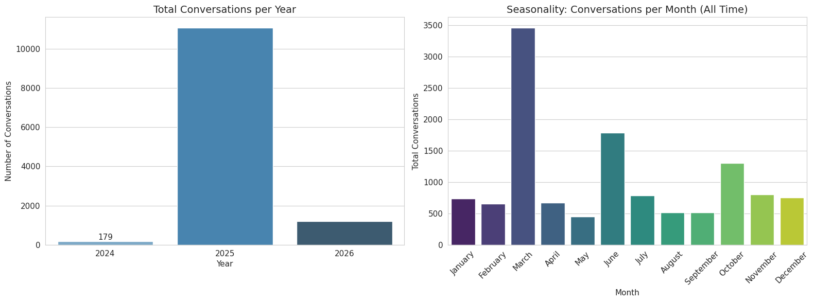
تعرض هذه الرسمة لوحتين بيانيتين أساسيتين (2 Subplots) توضحان حجم واستخدام المنصة على المستويين السنوي والشهري التراكمي:
📌 ملاحظة: تفاصيل نشاط "أيام الأسبوع" و"ساعات اليوم" تم إفراد رسومات بيانية مخصصة ومفصلة لها لاحقاً في الرسوم (Chart #04 الخريطة الحرارية، و Chart #11 و #12).
تعتبر هذه الرسمة بمثابة البوصلة الاستراتيجية لتخطيط السعة والنمو السنوي:
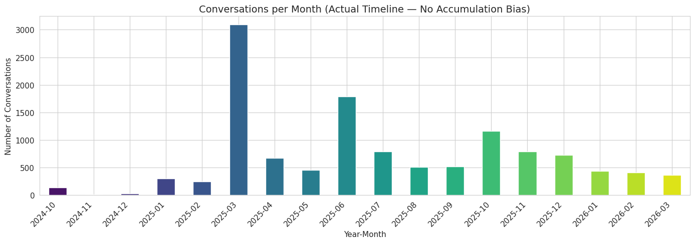
تعرض هذه الرسمة التسلسل التاريخي الحقيقي للمحادثات شهرًا بشهر على مدار 18 شهرًا متتاليًا (من 2024-10 إلى 2026-03) بشكل منفصل دون دمج شهور السنوات المتشابهة:
تكشف هذه الرسمة عن الأثر الموسمي الحاسم للمناسبات الدينية الكبرى:
في الرسم البياني السابق (Chart 1)، يظهر شهر مارس برقم 3,458 محادثة لأن الرسم السابق جمع أرقام مارس 2025 (3,091) مع مارس 2026 (367). هذا الرسم المنفصل (Chart 2) يصحح هذا الانحياز ويوضح الواقع بدقة متناهية.
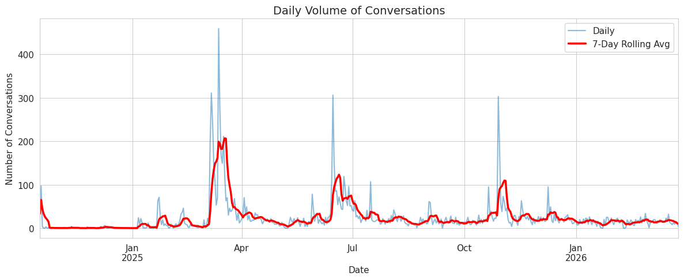
تعرض هذه الرسمة منحنيين للنشاط اليومي على مدار ما يقارب 520 يوماً متصلاً:
تساعد هذه الرسمة في مراقبة الاستقرار التشغيلي وكشف الشذوذ:
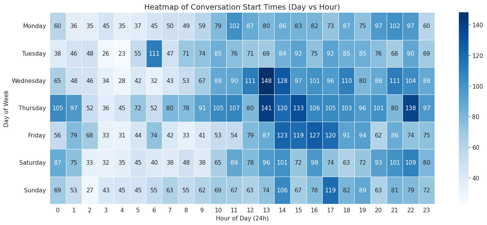
مصفوفة لونية دقيقة تقيس كثافة المحادثات عند تقاطع كل يوم من أيام الأسبوع مع كل ساعة من ساعات اليوم الـ 24:
تستخدم الخريطة الحرارية في توزيع الورديات والدعم البشري الفوري:
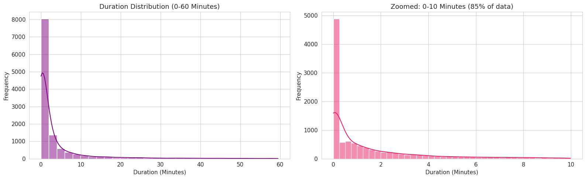
تعرض هذه الرسمة لوحتين بيانيتين لتوزيع الزمن الإجمالي الذي يقضيه المستخدم داخل المحادثة:
تكشف هذه البيانات عن النمط السلوكي المهيمن لزوار الموقع:
هل يتفاعل المستخدمون فعليًا أم يغادرون فور فتح المحادثة؟ وما هو عمق النقاشات المسجلة؟
شرح تفصيلي للغتي الهيمنة (العربية والإنجليزية) ولغات النمو الصاعدة (السواحيلية، الفلبينية، والفرنسية).
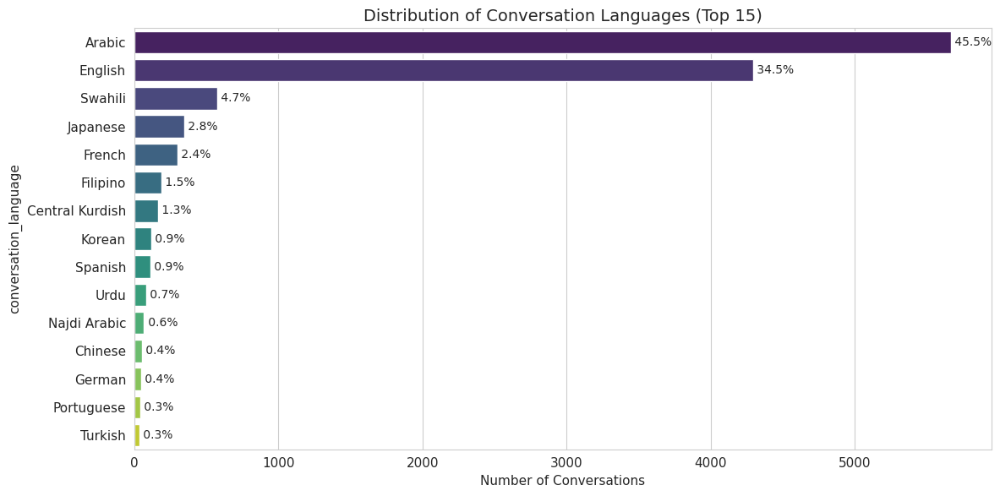
رسم شريطي أفقي يوضح الترتيب التنازلي للغات الـ 15 الأكثر استخداماً من بين 80 لغة اكتشفها النظام، مع ذكر النسبة المئوية المكتوبة على طرف كل شريط وعدد المحادثات على المحور الأفقي:
توجه هذه البيانات خطة الترجمة وتطوير النماذج:
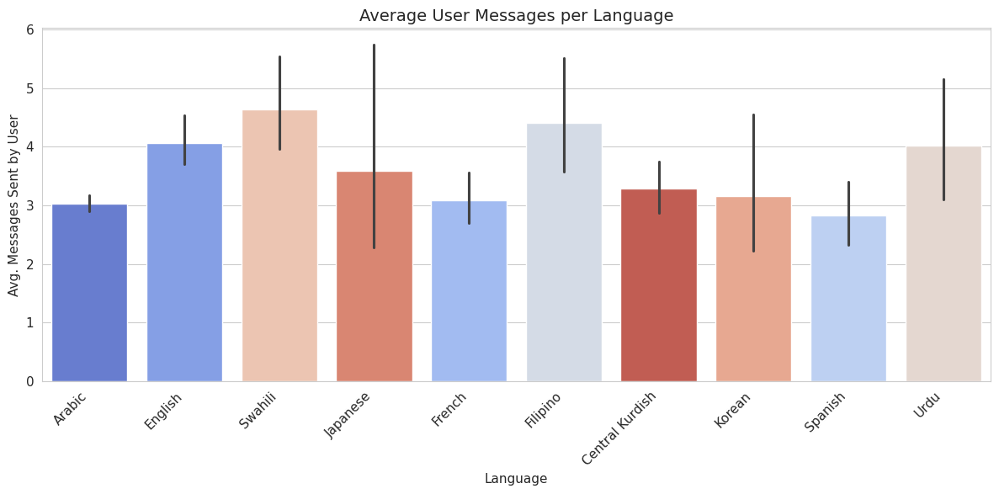
رسم شريطي رأسي (Vertical Bar Chart) يقارن متوسط عدد الرسائل التي يكتبها المستخدم في المحادثة الواحدة مصنفة حسب لغته (مع خطوط فترات الثقة السوداء):
تفسير عمق الحوار وتوجيه استراتيجية المحتوى:
تشريح دقيق لـ 109 حالات لم يرد فيها المساعد، تصنيف درجات خطورتها، وتحليل أوقاتها ولغاتها.
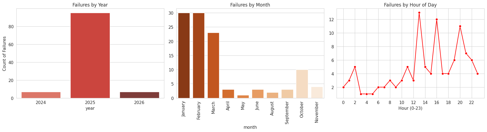
تحتوي هذه الرسمة على 3 لوحات فرعية متتالية (3 Subplots) تحلل توقيت حدوث حالات الصمت الـ 109:
تحديد الأخطاء التقنية المحددة في النظام وتحسين معدل الرضا:
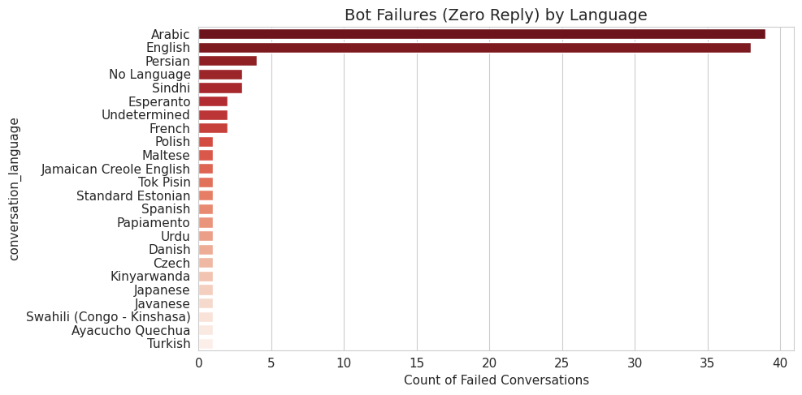
رسم شريطي أفقي واحد (Horizontal Bar Chart) يوضح عدد مرات صمت البوت مصنفة حسب كل لغة بالتفصيل من الأعلى للأدنى:
حماية تجربة المستخدم تحت وطأة الضغط:
قياس هل الحوار طبيعي وتفاعلي أم يعاني من إطالة مفرطة (محاضرة) أو تعثر المستخدم (استجواب)؟
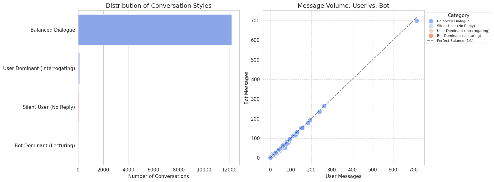
تحتوي الرسمة على لوحتين متكاملتين:
تقييم جودة الصياغة الحوارية ونماذج التوجيه (Prompt Engineering):
شرح 3 رسومات بيانية توضح كيف تعكس اللغات المختلفة مواقع مستخدميها الجغرافية وتوقيتاتهم المحلية عبر السنوات 2024 و 2025 و 2026.
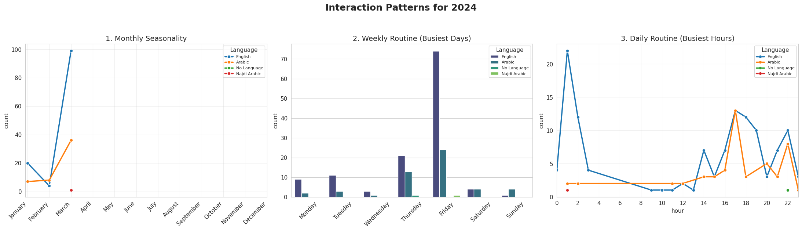
لوحة ثلاثية (3 Subplots) توضح سلوك اللغات الأولى (الإنجليزية والعربية والعربية النجدية) في 2024:
تقييم مرحلة الإطلاق التجريبي (Soft Launch):
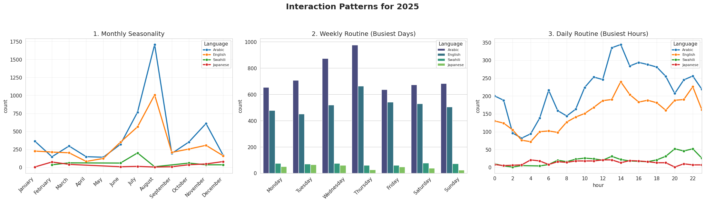
الرسمة الأكثر أهمية لسلوك اللغات عبر 3 لوحات فرعية (3 Subplots) خلال عام 2025 الرئيسي:
تخصيص الحملات التسويقية حسب الثقافة والمناطق الزمنية:
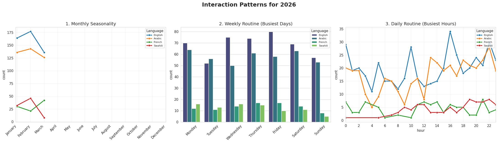
توضح تفاعل اللغات في الربع الأول من عام 2026 عبر 3 لوحات فرعية (3 Subplots):
اكتشاف لغات النمو الاستراتيجي المستقبلية:
تشريح دقيق لأزمنة رد الذكاء الاصطناعي والمستخدم، وتوزيع فئات السرعة بعد عزل الأخطاء الشاذة.
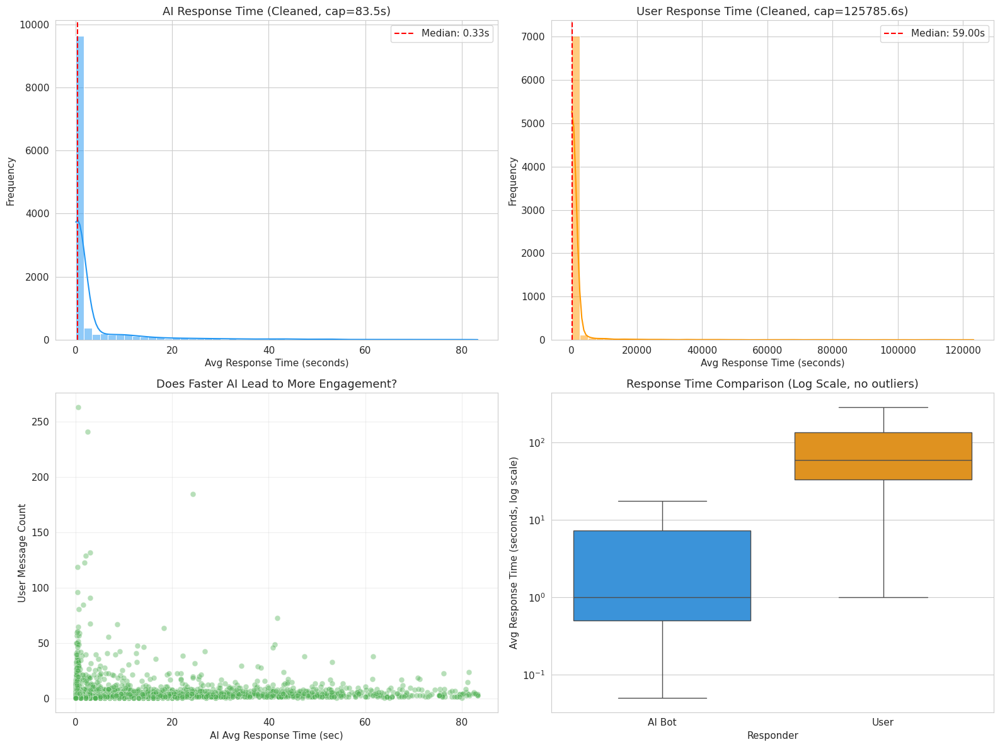
تحتوي هذه الرسمة على 4 لوحات إحصائية دقيقة في شبكة رباعية (2x2 Grid):
AI Response Time (Cleaned, cap=83.5s) - مدرج تكراري أزرق مع خط وسيط أحمر متقطع يحمل علامة صريحة: Median: 0.33s، ويوضح أن الغالبية الساحقة من ردود الذكاء الاصطناعي تكتمل في أجزاء من الثانية.User Response Time (Cleaned, cap=125785.6s) - مدرج تكراري برتقالي مع خط وسيط أحمر يحمل علامة: Median: 59.00s، مما يثبت أن المستخدمين يستغرقون دقيقة واحدة تقريباً لقراءة الرد والتفكير وكتابة السؤال التالي.Does Faster AI Lead to More Engagement? - مخطط تشتت بنقاط خضراء يقارن سرعة رد البوت (محور X من 0 إلى 80 ثانية) بعدد رسائل المستخدم (محور Y حتى 250 رسالة).Response Time Comparison (Log Scale, no outliers) - مخطط الصندوق (Boxplot) يقارن صندوق سرعة البوت الأزرق (AI Bot) بصندوق سرعة المستخدم البرتقالي (User) على مقياس لوغاريتمي (من 10⁻¹ إلى 10² ثانية).ضمان سلاسة التجربة ومنع تسرب المستخدمين أثناء الانتظار:
سجلت البيانات الخام في السيرفر رقماً متطرفاً بلغ 2,088,585 ثانية (أي 24 يوماً زمن رد للمساعد!). هذا خطأ تقني مستحيل برمجياً ناتج عن تعليق التايمر في المتصفح. قمنا بحذف أعلى 1% من القيم الشاذة لتقديم صورة نقية وصادقة تعكس الواقع الحقيقي.
هل يكتفي المستخدم بجلسة واحدة أم يعود لاحقاً لنفس المحادثة؟ وما الفارق في عمق التفاعل؟
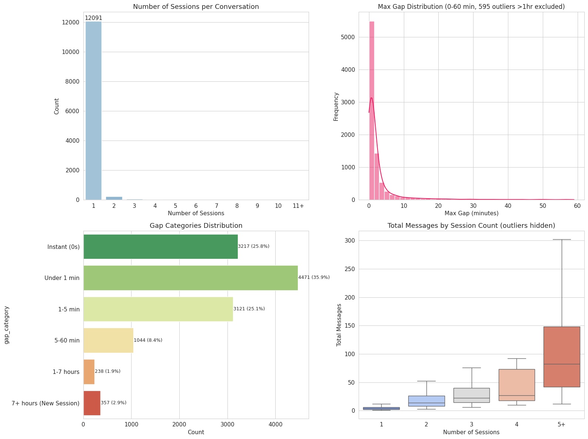
تعرض هذه الرسمة 4 لوحات متكاملة في شبكة رباعية (2x2 Grid) لتحليل الجلسات والفجوات الزمنية:
Number of Sessions per Conversation - رسم شريطي أزرق يوضح بالرقم المكتوب فوق العمود الأول أن 12,091 محادثة تمت في جلسة واحدة (Session 1)، بينما توزعت باقي المحادثات على 2 و 3 و 4 و 5+ جلسات.Max Gap Distribution (0-60 min, 595 outliers >1hr excluded) - مدرج تكراري وردي ومنحنى كثافة يوضح أن الغالبية العظمى من الفجوات بين الرسائل تحدث خلال أول دقيقتين.Gap Categories Distribution - رسم شريطي أفقي ملون يعرض الفئات الست الدقيقة بالأرقام والنسب المكتوبة داخل الأشرطة:
Total Messages by Session Count (outliers hidden) - مخطط الصندوق (Boxplot) يوضح التدرج التصاعدي لعدد الرسائل: وسيط 4 رسائل للجلسة الواحدة، ويرتفع إلى 13 للجلسة 2، و 21 للجلسة 3، و 31 للجلسة 4، ويصل إلى 48 رسالة للجلسات 5+.استغلال الفرصة الدعوية الذهبية للمستخدمين العائدين:
تقييم درجة الثقة في تصنيف اللغات، ولماذا تعاني اللغة العربية من ظاهرة خلط اللغات (Code-Switching)؟
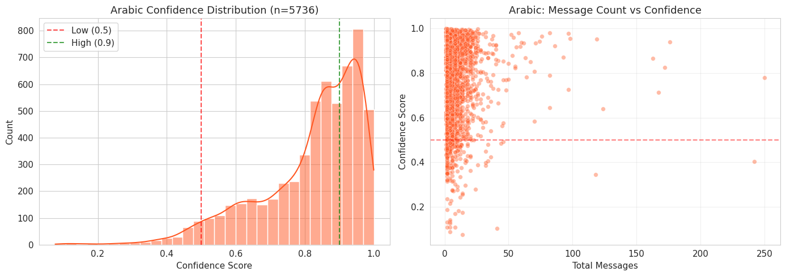
تحليل إحصائي متعمق لمستوى ثقة نموذج تصنيف اللغة في المحادثات العربية عبر لوحتين بيانيتين (2 Subplots):
فهم السبب الحقيقي وتطوير خوارزمية المعالجة اللغوية (NLP):
Mixed / Bilingual لمنع تشويه الإحصائيات اللغوية.مقارنة سرعة البوت عبر 15 لغة، ومصفوفة الالتزام بمستويات الخدمة (SLA Compliance)، وأزمة اللغة الكردية.
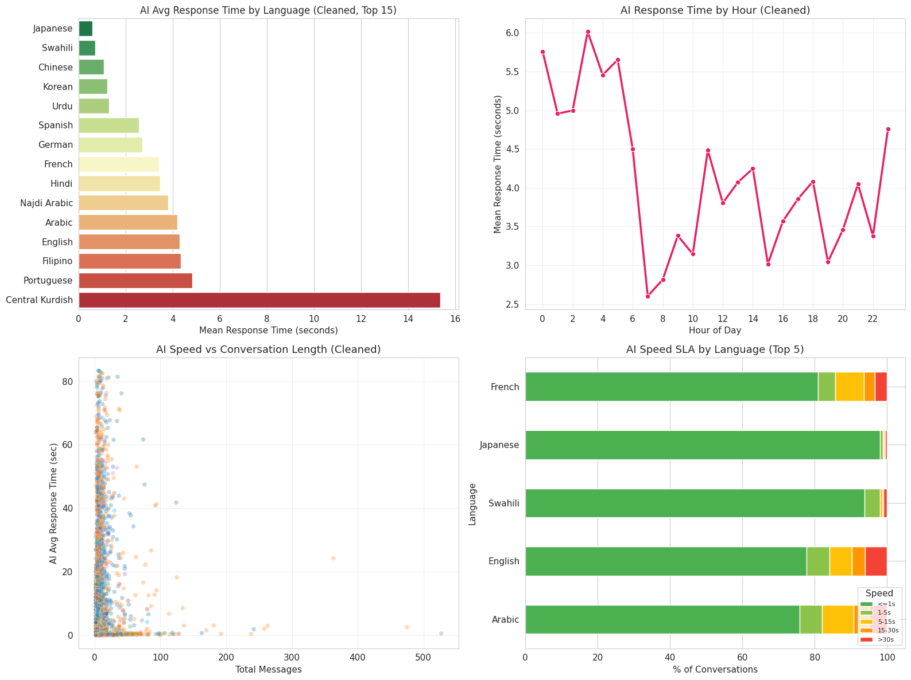
لوحة قيادة تنفيذية شاملة تضم 4 لوحات قياس حاسمة في شبكة رباعية (2x2 Grid):
AI Avg Response Time by Language (Cleaned, Top 15) - رسم شريطي أفقي متدرج الألوان (من الأخضر فائق السرعة إلى الأحمر الداكن البطيء):
AI Response Time by Hour (Cleaned) - خط بياني وردي يوضح متوسط سرعة الرد عبر ساعات اليوم (0-23):
AI Speed vs Conversation Length (Cleaned) - مخطط تشتت يقارن إجمالي رسائل المحادثة (محور X حتى 550 رسالة) بزمن رد البوت (محور Y حتى 80 ثانية)؛ ويوضح أن المحادثات القصيرة تحافظ على استجابة سريعة جداً، بينما المحادثات الطويلة (+100 رسالة) تشهد تشتتاً وارتفاعاً في زمن التوليد بسبب كبر حجم السياق (Context Window).AI Speed SLA by Language (Top 5) - أشرطة مكدسة توضح نسبة الالتزام بمستويات الخدمة (SLA) لأعلى 5 لغات:
تحديد الاختناقات التقنية وتحديث البنية التحتية:
خريطة طريق عملية مبنية على الأدلة والبيانات لتطوير أداء المنتج وتوسيع الأثر الدعوي والتقني.
| م | التوصية الاستراتيجية | الأولوية | الأثر المتوقع على البيزنس والمنتج | فريق التنفيذ المسؤول |
|---|---|---|---|---|
| 1 | حل أزمة بطء الكردية الوسطى: فحص خط أنابيب معالجة التقطيع اللغوي (Tokenization) وتوجيه طلبات اللغة الكردية لنموذج أسرع. | أولوية قصوى | تحسين سرعة الاستجابة لـ 165 محادثة من 11.1 ثانية إلى أقل من ثانية واحدة (تسريع 15x). | فريق هندسة الذكاء الاصطناعي |
| 2 | تطوير نموذج اكتشاف اللغة للمحادثات المختلطة: تدريب المصنف على تمييز خلط العربية والإنجليزية (Code-Switching) وإضافة فئة Bilingual. |
أولوية عالية | رفع دقة تصنيف لغة المحادثات العربية من 36.9% إلى أكثر من 90%، وإنهاء انخفاض درجات الثقة. | فريق علوم البيانات و NLP |
| 3 | مراجعة الـ 30 حالة صمت حرجة: تدقيق أسباب عدم رد البوت على الأسئلة الحقيقية وتفعيل التنبيه الفوري التلقائي (Fallback Alert). | أولوية عالية | ضمان عدم ترك أي سائل أو مهتدٍ محتمل دون إجابة (Zero Silent Drop) وحفظ سمعة المنصة. | فريق الجودة والعمليات |
| 4 | التوسع في دعم المحتوى الفرنسي والسواحيلي: دعم النمو الكبير للغة الفرنسية في 2026 (المركز 3) والسواحيلية في شرق أفريقيا. | أولوية متوسطة | مضاعفة معدلات اعتناق الإسلام واستقطاب باحثين جدد من أفريقيا الفرنكوفونية وشرق أفريقيا. | فريق المحتوى والدعوة المتخصصة |
| 5 | الاستعداد لمواسم الذروة (رمضان والحج): ضبط نظام التوسع التلقائي للسيرفرات (Auto-scaling) قبل المواسم بشهر على الأقل. | أولوية متوسطة | تفادي انهيار أو بطء الخدمة أثناء قفزات الاستخدام التي تتجاوز +1,100% في رمضان. | فريق البنية التحتية و DevOps |
| 6 | بناء مسار تحويل للـ 357 محادثة متعددة الجلسات: ميزة حفظ السجل وإتاحة زر التواصل المباشر مع داعية بشري متخصص. | فرصة نمو كبرى | تعظيم الأثر الدعوي للفئة الأكثر تفاعلاً وجدية (متوسط 47.2 رسالة للمحادثة). | فريق تجربة المنتج (Product & UX) |
خطط حوار تشغيلية واستراتيجيات ردود مبنية على تحليل أداء آلاف الحوارات الحقيقية.
دراسة استهلاك 22.9 مليون توكن والتوصيات المعمارية لتوفير 24.4% من التكاليف.
يستهلك المستخدم المسلم متوسط 4,979 توكن لكل محادثة مقارنة بـ 4,393 توكن لغير المسلم، نظراً لاسترسال البوت في تفصيل المسائل الفقهية والخلافات المذهبية بدلاً من التركيز على الهدف الأساسي للمنصة وهو دعوة غير المسلمين.
بناء طبقة توجيه ذكية تفصل المحادثات فورياً: مسار دعوي متخصص ومكثف لغير المسلمين (Dawah Track)، ومسار استشاري فقهي سريع ومدعوم بقاعدة فتاوى مختصرة للمسلمين، مما يوفر ما يصل إلى 24.4% من التوكنز المهدرة.
تحليل وتطبيع 22,028 إشارة لموضوعات الحوار عبر المنصة.
أدخل مفتاح Gemini API لبدء التحليل الذكي للأسئلة المعروضة